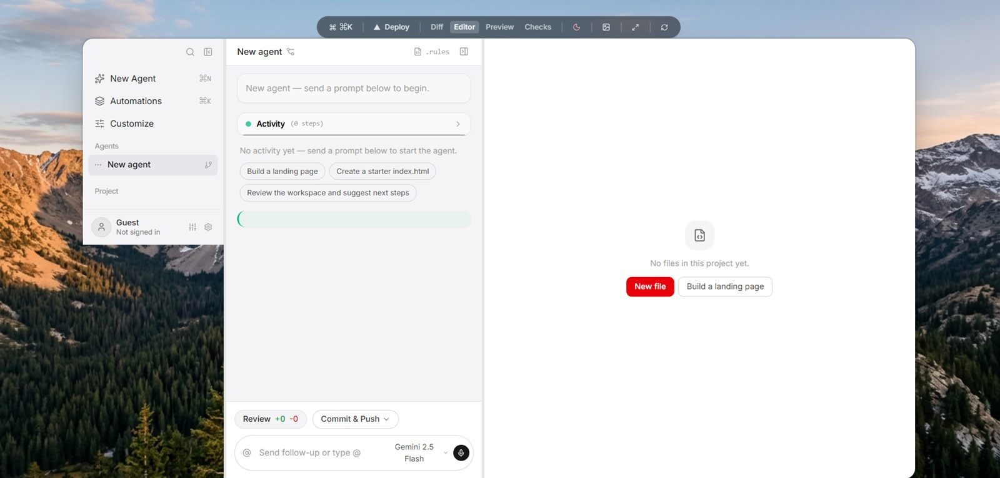

Agent composer
Prompt in plain English. Every turn streams back as reviewable steps with checkpoints you can roll back to.
Describe what you want. Zut's agent writes the code, shows you the diff, and previews it live — in your browser, on any laptop or Chromebook. Nothing to install.

Features
Prompt in plain English. Every turn streams back as reviewable steps with checkpoints you can roll back to.
Unified and split views of exactly what changed, per file, with accept and revert line by line.
Sandboxed preview that rebuilds as you type, with desktop and mobile viewports and a console drawer.
Run your checks, see pass and fail rows, and hand failures straight back to the agent to fix.
Real run history with timings and logs, so performance is a fact, not a feeling.
One link puts a read-only copy of any project in front of anyone. No account needed to view.
Connectors
Keys stay in your browser. The agent sees what's connected and offers to use it — nothing runs without your click.
Ship the project to your Vercel account straight from the Deploy button.
Push code without leaving Zut. Token saved once, prefilled ever after.
Upload images from the explorer; the URL lands on your clipboard.
Link a project and the agent designs tables and RLS for it.
Stock photos for landing pages, searched with your key.
How it works
Type what you want in plain English, or pick a starter chip.
Steps stream into Activity with a snapshot before every turn.
Accept what you like, revert what you don't, ask follow-ups.
Preview locally, run checks, then ship it to the web.
Models
Zut works with the providers you already pay — or none at all for plain code and Run. Keys are stored only on your device and never leave it except to call the provider.
Self-hosting with opencode on your own machine? Pick any model it serves — including free ones — from the session picker, or type any model ID.
Pricing
Free while we're in pilot
Free app — pay your provider
If it weren't for compute cost, Zut would be free entirely. We only ever charge what the machines cost.
FAQ
No. Zut runs entirely in your browser. Optional local helpers (run broker, opencode self-host) unlock more power on your own machine, but the IDE works without them.
Any you hold a key for — Gemini, OpenRouter, Claude, ChatGPT — plus anything your self-hosted opencode serves, including free models. Pick per session; type any model ID.
Yes. Zero install, no terminal, no build tools on your device. Heavy work runs in the browser tab or on a machine you choose.
Projects live in your own Supabase project or on your device. API keys never leave your browser except to call the provider you chose.
Connect your Vercel token once in account settings, hit Deploy, and you get a live URL. No anonymous deploys, ever.
Editing is free. While we're in pilot, agent turns are on us; afterwards you either bring your own key or cover raw compute — never more.